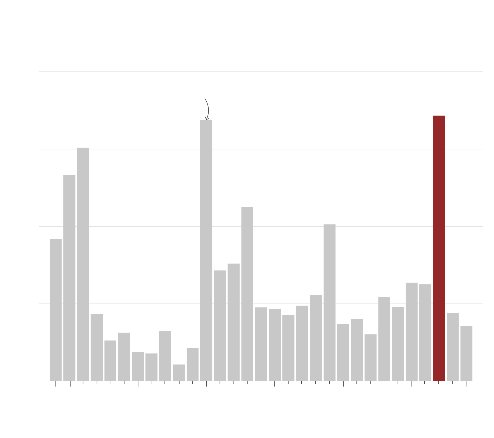

Duterte sets record in conflict killings due to siege in South
February 5, 2022
President Rodrigo Duterte will step down from office in June, holding the grim record of having the greatest number of people killed in a conflict in a single year.
The record, at 1,687 people killed according to the UN, was reached in 2017 when the government intensified its efforts to hunt down terrorist groups, following an attack in Marawi City, Lanao del Sur province in Mindanao, southern Philippines.

Marawi siege kills most people caught in conflict
Number of deaths per year
2,000
Stepped up Phl-US
cooperation vs. Abu Sayyaf
1,500
1,000
500
0
2019
1990
1995
2000
2005
2010
2015
Source: UN Office for Coordination of Humanitarian Affairs
Granted, majority of fatalities were on the side of terrorist and rebel groups, no time since at least 1989 had there been a higher death count from conflicts despite decades-old communist insurgency and terrorism in Mindanao. Duterte himself ran on a presidential campaign to foster peace with separatists, but that fell through halfway through his six-year term.
In May 2017, government troops responded to a siege by over a hundred Muslim rebels in Marawi, starting a sporadic manhunt for perpetuators and prompting Duterte to declare martial law in the entire Mindanao supposedly to contain the violence. The military rule lasted for two years when deaths from conflict were substantially lowered, but rebuilding the city devastated by the fighting continues to this day, delayed by bureaucratic red tape and the pandemic.
In total, there were 265 conflicts recorded in 2017, the highest since at least 1989 when the UN started collecting data, according to the agency. That year, over 100 people per 100,000 people died in crossfires and unilateral attacks in public spaces.

Mindanao see most deaths from conflict
War-torn Lanao del Norte, Sulu, Basilan top 4-year death toll
Deaths per 100,000 population
(2016-2019)
120
40
20
Manila
Cebu
Basilan
Sulu
From 2016 to 2019,
Lanao del Norte
saw 120 deaths per 100,000
due to conflict.
Source: UN OCHA
Since 2016 when the Duterte administration took office to pre-pandemic 2019, nearly 700 conflicts had been tallied, with Lanao del Sur topping the list of number of deaths at 120 deaths per 100,000 people. The province was followed by Basilan and Sulu— also conflict-ridden areas in Mindanao— with around 40 people per 100,000 dead from conflict.
The National Capital Region, Metro Manila, saw 28 conflicts from 2016 to 2019 with less than 1 person per 100,000 dying. Prinz Magtulis
This project is in partial fulfillment of requirements for master of science degree in data journalism at Columbia University. See code and data here.